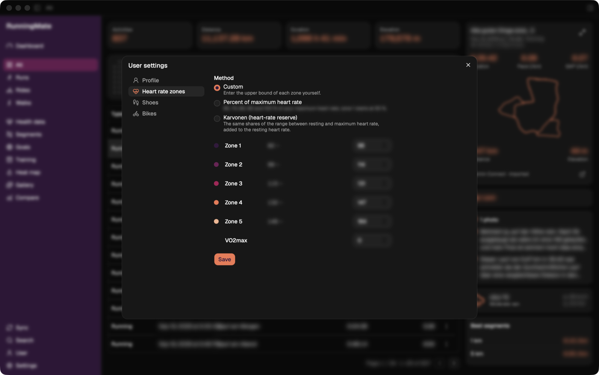

User Settings
The user settings hold your profile, your heart-rate zones and your shoes and bikes. Open them with User at the bottom of the sidebar or with RunningMate → User Profile…. Pick a page on the left. Heart rate zones, Shoes and Bikes become available once you have saved a profile.
Profile
Fill in the fields and click Save.
- Name
- Birthday, as DD.MM.YYYY. Your age is calculated from it, for the suggested heart-rate zones and for rating your cardio fitness.
- Weight (kg), between 20 and 300. Used for the calories and the power estimate of each activity.
- Height (cm), between 100 and 250.
- Resting heart rate (bpm), between 30 and 120. Used for the heart-rate zones with the Karvonen method.
- Maximum heart rate (bpm), between 100 and 230 and above the resting heart rate. Used for the suggested heart-rate zones and the zones worked out from it.
- Sex, optional. Only used to compare your cardio fitness (VO2max) with people of your age and sex.
A changed weight applies to activities imported or recomputed afterwards.
Heart rate zones

First pick how the five zones are set under Method:
- Custom: you enter the upper bound of each zone in bpm. The lower bound of each zone is shown next to it: zone 1 starts at half the upper bound of zone 5, every other zone one beat above the previous one. Each bound must be a whole number between 40 and 240 and above the previous one. As long as you haven't saved bounds, the page suggests some: 60, 70, 80, 90 and 100 % of your maximum heart rate, or of 220 minus your age if you haven't entered one. Adjust them and click Save.
- Percent of maximum heart rate: the zones end at 60, 70, 80, 90 and 100 % of the maximum heart rate from your profile; zone 1 starts at 50 %.
- Karvonen (heart-rate reserve): the same shares, but of the range between your resting and maximum heart rate, added to the resting heart rate.
For the last two the page shows the resulting zones in bpm; you can't edit them. They follow your profile: change your resting or maximum heart rate there and the zones change with it. Without a maximum heart rate (and, for Karvonen, a resting heart rate) in the profile the page asks you to enter them and you can't save the method. Your custom bounds are kept when you switch to another method, so switching back brings them back.
Until zones are saved, no time in zones is shown. With zones, you see Time in heart-rate zones on the Heart rate zones page of the detail window and on the Health Data page. In the Heart-rate trend on that page, the tops of zones 1, 3 and 5 are drawn as Min, Ideal and Max lines. See Heart rate zones for the methods and how the time in zones is worked out.
VO2max is your own value, if you know it (for example from a lab test or your watch). It is used where RunningMate can't estimate one from your runs.
Shoes and Bikes
Shoes are for runs and walks, bikes for rides. Each page lists your items with their Distance (km) and an In use switch.
- Add an item with a name (and, for a bike, an optional Weight (kg)) and click Add. It starts at 0 km.
- Assign it to an activity on the Edit page of the detail window, under Shoes or Bike. New activities get none; you pick it per activity. The change applies right away and moves the activity's distance from the previous item to the new one.
- The distance follows the activities: editing an activity's distance, re-importing it or deleting it adds or takes off the difference.
- Switch In use off for shoes or bikes you've retired. They keep their distance but aren't offered for new activities.
- Deleting an item removes it from every activity it was assigned to. To keep the history, switch In use off instead.